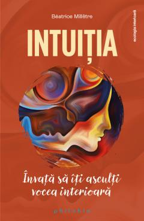

Intuitia. Invata sa iti asculti vocea interioara
Beatrice Milletre
Intuitia nu e o plasmuire a mintii, ci rodul unui rationament extrem de elaborat si de structurat – dar intr-un mod diferit. Ea imbraca mai multe forme: de la rationamentul intuitiv care ne ofera o solutie fara ca noi sa stim cum s-a desfasurat procesul, la cunoasterea intuitiva care ne furnizeaza o informatie pe care nu stiam ca o detinem si pana la procesul intuitiv care ne permite sa ajungem la un rezultat fara a intelege drumul parcurs pana la el.
Desi se raporteaza permanent la mediul in care traiesti, intuitia – sau vocea ta interioara – nu uita niciodata un parametru fundamental: felul tau de a fi, personalitatea pe care o ai, competentele cu care esti inzestrat, aspiratiile, gusturile, dorintele tale... Ea te cunoaste foarte bine, asa ca te indruma mereu catre deciziile corecte. Este – daca vrei – un al saselea simt, care te ajuta sa iei mai rapid decizii, sa iti dezvolti inteligenta instinctiva si sa fii in acord cu tine.
Indiferent ca ii spunem instinct, presentiment, miracol, mediumnitate, voce interioara sau magie, intuitia si-a castigat de ceva vreme recunoasterea stiintifica, autoarea invitandu-ne sa exploram resorturile acestui proces profund uman si sa ne transformam intuitia intr-un atu, sa avem incredere in ea si sa fim in acord cu propriul adevar.